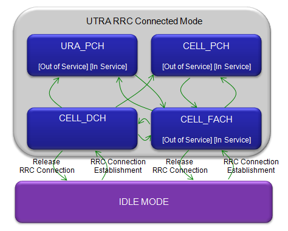
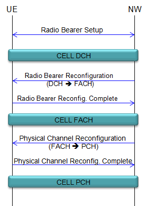
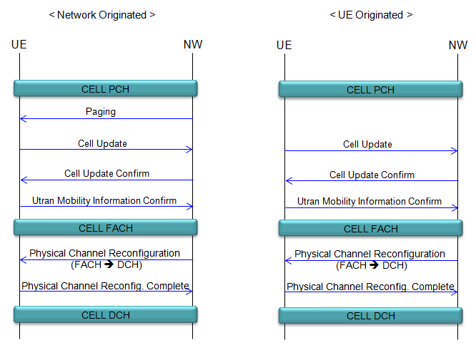
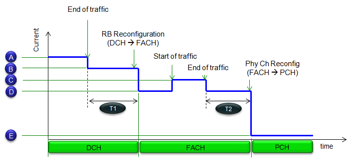

|
UMTS Quick Reference Go Back To Index Home : www.sharetechnote.com |
|
|
RRC State Change
'RRC State' refer to various different phases in which UE/Network be after RRC Connection Setup and before RRC Release. In most case, these states occurs after Radio Bearer Setup. RRC State Change refers to the process of switching between these states.
Roughly there are three different stages (DCH, FACH, PCH).. but in more detail you can classify them into four different stages as shown below. As you see below, in most case you can jump from one states to any other stages by single step, but there are a couple of cases you cannot switch with a single step. For example, you cannot switch from CELL_PCH to URA_PCH directly. You can switch from DCH to PCH directly, but you cannot switch from PCH to DCH directly.

Let's think about what can happen in each of these states.
DCH : You can call this state as 'Normal traffic mode'. When you make any connection for traffic (e.g, voice call and data call), in most case you (UE/Network) establish DCH state and most of traffic (Voice data, packet data) are being transmitted and received in this stage.
FACH : This is the stage in which UE can still send and receive user data but at much lower data rate comparing to DCH. For the detailed understanding on this stage, you have to understand the detailed channel mapping. But it is out of scope of this page. see Cell FACH Channel Mapping for R99/R5/R6 and R7.
PCH : In terms of mode of operation, PCH is very similar to IDLE mode. UE cannot send and receive the user data, it can only monitor/recieve SIBs and Paging. The difference between PCH and IDLE mode is that PCH is still a kind of 'RRC Connected' stage. So it would require less steps of RRC procedure to go back to FACH/DCH for user data transaction.
Why we need RRC State Change ?
Why do we need this kind of multiple stages ? Let me give you an example situation where these state change become helpful.
Let's suppose that UE just establish a data connection and downloaded a web page and you started reading the page. While you are reading the page, there would be no traffic between UE and network. So it would be waste of energy (on UE side) if they are still in normal connected mode (DCH) and Network also maintain the spreading code even though it is not used. (spreading code (OVSF code) is one of the most valuable and limited resource for the network).
Then would there be any better way ?
If you can guarantee that there would be no traffic for a long time, the simplest option would be just completely tear down the RRC session and goes to IDLE mode. But what if you clicked a hyperlink in the webpage and goes to the link. Then UE has to establish RRC session and create the radio bearer from scratch which would take long procedure and cosume a lot of energy. If you repeat this type of operation, ie. the repetition of short traffic - short pause, it would not be efficient if they blindly go to IDLE mode and reestablish the connection.
Then what would be the best way ?
It would be better if we have some 'intermediate' states between IDLE and DCH (Fully Connected Mode) in which they are still in 'partially' connected mode and save energy/critical resource at the same time. FACH and PCH are the 'intermediate stage'. Usually UE/Network goes into FACH when there is no user traffic for a certain time period and it stays there when there is only a small amount of data traffic. If there is no user traffic even in FACH for a certain time period, they switch to PCH.
If they start getting user data in FACH or PCH, they can switch back to DCH or FACH depending on the amount of the data.
RRC Sequences to get into FACH/PCH
Following is the overal RRC message sequence for switch from DCH to FACH and from FACH to DCH. What you should notice is that this transition is triggered by Network, not UE. It means that UE has no direct control over this transition, it is all up to Network to determine whether it switch to other states or not. It is also upto Network when to switch to other states. UE may send some 'indication' implying 'I want to switch to FACH' by sending a special message (e.g, Signaling Connection Release Indicator), but it is upto network whether it takes 'proposal' or not.

RRC Sequences to wake up from FACH/PCH
Following is generic sequence by which they can wake up from PCH to FACH or switch from FACH to DCH. This procedure can be triggered by Network or UE as shown below. It means UE can initiate data traffic any time it wants.

Factors on Current Consumption
One of the biggest motivation for adopting RRC State Change technique is for reducing energy consumption. So I think it is worth talking a little bit about energy consumption over these different states. Following is an illustrations that would show you overal power consumption (energy consumption) profile over time. To have meaningful energy consumption information for any specific cases, you need to detailed measured data for all the markers (A,B,C,D,E and T1,T2) that I put in the graph.

I linked a paper which would give you a little bit detailed story about RRC State Changes and Energy consumption(See this paper (by Pekka H. J. Perälä1 et al) for detailed information.). But this is not the full story, you would need your own measurement data for your own device if you want to get the accurate value for your own device.
Let me give you just a big pictures for each of the marker shown above.
Marker A : This is the period during which is in DCH and data traffic is on-going. In this period, the most important factors for energy consumtion is UE Tx power and type of radio bearer. So without the specific value for UE Tx power and radio bearer type, it would be hard to evaluate the energy consumption. (According to the paper linked above and some of my experience, you would see at least 200 mA or higher at this period).
Marker B : This is the period during which is in DCH and no data transmission/reception is on-going. so UE Tx power would not give influence here, but radio bearer type would be more influential. Especially if the Radio Bearer is in HSPA mode, UE would send CQI report even when there is no user data transmission. In this case, UE Tx power would play role as well.
Marker C : This is the period during which is in FACH and no data transmission/reception is on-going. According to the paper linked above, this period would consume 100 mA or higher.
Marker D : This is the period during which is in FACH and data traffic is on-going. In this period, the most important factors for energy consumtion is UE Tx power. So without the specific value for UE Tx power, it would be hard to evaluate the energy consumption.
Marker E : This is the period during which is in PCH. Since the mode of PCH operation is very similar to IDLE mode operation. The overall current consumption would be almost same as IDLE mode current consumption. According to the paper linked above, the current consumption would be less than 5 mA, but it would vary according to idle mode DRX cycle.
Marker T1 : This is the period during which there is no data in DCH and network would need some time to make any decision on whether it would continue to stay in DCH or switch to FACH. This duration would influence a lot with long term energy consumption on UE but UE does not have much control over length of this period. UE may send some indication by sending "Signal Connection Release Indication', but it is up to Network whether to take it or not. Normally this period would take several seconds (e.g, 5 sec).
Marker T2 : This is the period during which there is no data in FACH and network would need some time to make any decision on whether it would continue to stay in FACH or switch to PCH. This duration would influence a lot with long term energy consumption on UE but UE does not have much control over length of this period. Normally this period would take several seconds (e.g, 5 sec).
|